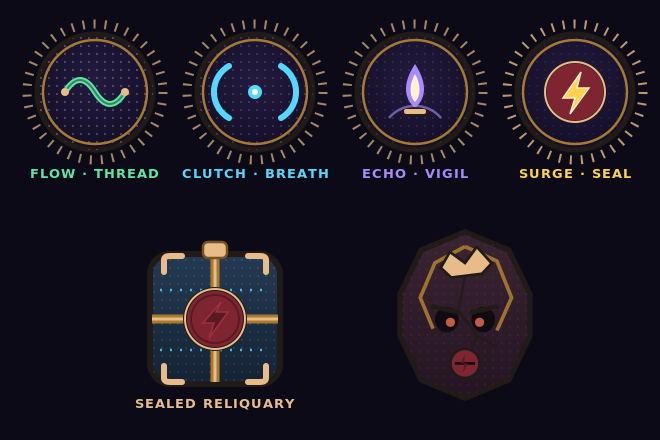
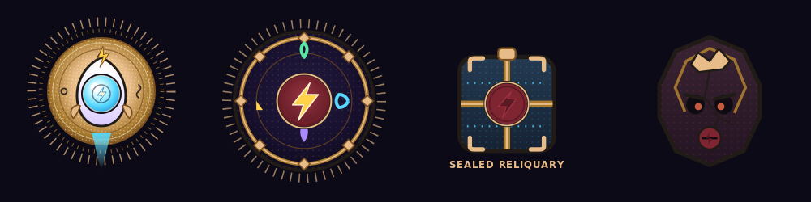
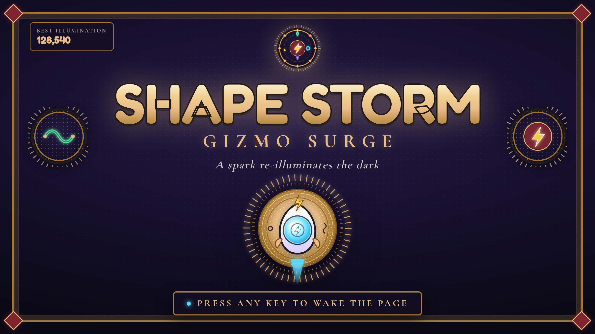
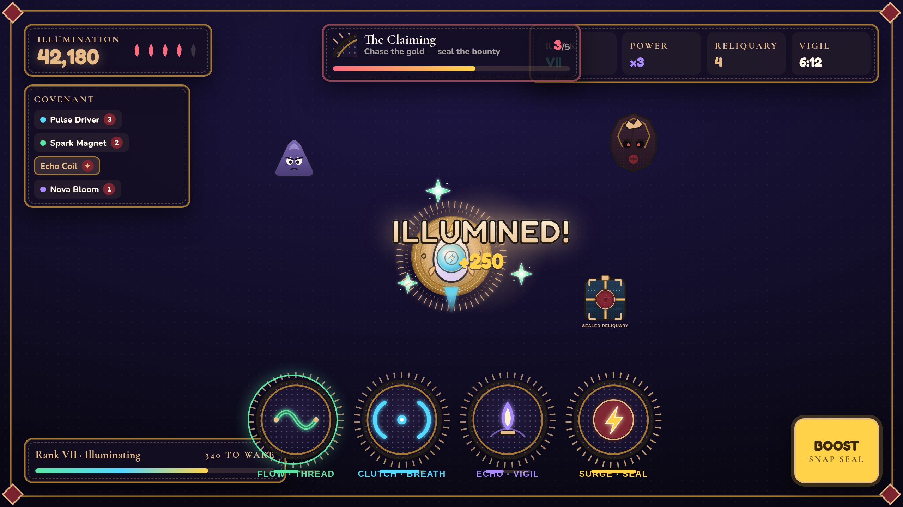
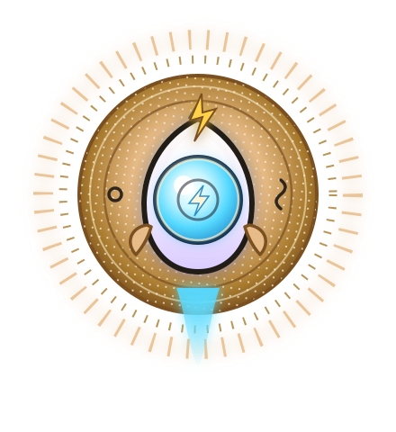

Where ancient symbolism meets futuristic arcade. A spark re-illuminates a sleeping codex — and the dopamine becomes a verdict.
I Two worlds meet
Futuristic light, laid upon ancient matter.
The first direction, Lumen & Static, gave Gizmo a premium neon-on-dark identity. The Symbolic World gives it something neon alone can't: meaning that changes state. Its grammar reads sacred and illuminated art — gold-ground, sealed emblems, charged empty space, borders that behave, materials that remember — as game design.
These two worlds are, on paper, opposites. The arcade runs on glow, sparkle, escalation, speed. The codex runs on ink, gold-leaf, restraint, slowness, weight. That tension is the whole point — and it has a hinge.
Surge — the arcade's biggest stored-light payoff — is gold. Illumination — the manuscript's word for blessing made visible, applied in gold-leaf — is also gold. The two worlds already share their most sacred color. We build the fusion on that rhyme: the neon light sits inside the ancient gold-ground, and every payoff becomes an illumination.
New world: The Hush is a vast, dormant illuminated codex, its pages gone dark. Gizmo is the spark that wakes the marks — and the player, by surviving the Shape Storm, re-illuminates the page.
II The one law we honor
That is the Symbolic World's single hard rule, and it disciplines the fusion. We don't bolt gold ornament onto the arcade as decoration. Every borrowed mark must do work: carry a verdict, hold a covenant, seal a reward, remember a wound. If a symbol doesn't change state, it doesn't ship.
The corpus also taught us its drift to reject — and some of it points straight at the arcade: "no rarity glow, no victory sparkle, no green-smoke evil, no modern HUD hiding state." We don't ignore those. We negotiate them (see §VII), keeping the kid-friendly joy while grounding it in matter.
III The reframe
Every arcade beat becomes a symbolic operation. The mechanic is unchanged; the meaning and material are added.
| Arcade element | Symbolic operation | What changes state | Treatment |
|---|---|---|---|
| Level-up Nova | Illumination — blessing made visible | dark page → gold-ground blooms behind a sigil | aureole of gold-leaf + stipple radiance, ink sigil at center |
| Cache | Sealed reliquary / false gift | sealed → broken; light released (some gifts cost breath) | oxblood wax seal, gold-leaf bands, cyan light at the seams |
| Flow (mint) | Covenant of the Thread — route kept unbroken | woven → severed → re-woven | living thread sigil in an illuminated roundel |
| Clutch (cyan) | Covenant of Breath — held at the threshold | open → constricted → released (burst) | narrowing aperture / band + a breath-mote |
| Echo (violet) | Covenant of the Vigil — a kept flame | lit → lingering → echoed | vigil flame on a base, ripple rings |
| Surge (gold) | Covenant of the Seal — stored light | sealed → struck → discharged | bolt struck through an oxblood wax seal |
| Enemies | Counterfeit authority — false office | claims rank it has not earned; cracks when struck | crooked false crown, mismatched ornament, craquelure scar |
| Rarity tiers | Illuminated rank | plain mark → fully illuminated seal | signal by gold-leaf + seal density, not raw glow |
| Hearts | Breath | kept → spent | small flames / breath-motes, not generic hearts |
| The HUD | Page apparatus — borders that behave | frames tighten under pressure; emblems telegraph | ink + gold-leaf ruled panels, corner seals, serif inscriptions |
| Damage / heal | Material memory — restoration keeps the scar | wounded → mended, but marked | a seam or craquelure remains; no clean reset |
IV The four covenants
The signature four-economy system becomes four covenants — each an illuminated roundel: an ink-and-gold seal with stipple radiance, its neon hue the living light within. The meter is the covenant's state.

Flow · Thread (mint) · Clutch · Breath (cyan) · Echo · Vigil (violet) · Surge · Seal (gold). Below: the Cache as Sealed Reliquary, and a Counterfeit Seal enemy — beautiful, restrained, false (never horror clutter).
V Fused palette — light upon matter
Keep the four neon charge-hues as the light. Add the Symbolic World's measured pigments as the matter they rest on. Desaturate everything except the reds; let gold carry warmth everywhere.
The light — neon charge (unchanged)
The matter — ancient pigments (measured from the corpus)
Rule from the corpus Warm:cool ≈ 9:1 — cool is an event, not a default. Only red/gold may saturate; green & blue stay muted. Gold carries light; red carries cost; ink makes it official.
VI Type & technique — the fusion in the craft
Three-part type
- Fredoka — arcade display & dopamine numbers (now gold-leafed with an ink stroke = inscription).
- Cormorant Garamond — the manuscript voice: labels, verdicts, taglines ("kept", "vigil", "wake the page").
- Nunito — clean UI body, legible at speed.
Material technique
- Stipple radiance — glow built from dots/marks, not only Gaussian blur. Radiance is a texture, the way gold-ground is.
- Ink contour + gold-leaf rule-lines on every panel; corner wax-seals.
- Charged empty space frames the payoff — quiet makes the illumination land.
- Material memory — craquelure & seams; restoration keeps the scar.
- The aureole (gold-ground energy roundel) is geometric & secular — never a literal sacred halo.

Gizmo illuminated in a gold-ground aureole · the illuminated franchise seal · the sealed reliquary · the counterfeit-authority enemy.
VII The screens
Title — an illuminated page that is also a splash

mockup-title-fused.html — gold-leaf wordmark with ink stroke, oxblood corner seals, marginal covenant emblems that forecast mechanics, serif inscription, and Gizmo haloed in his aureole. "Press any key to wake the page."
HUD — page apparatus under chaos

mockup-hud-fused.html — ink + gold-leaf panels with serif labels (Rank · Reliquary · Vigil), the four covenants as the bottom cluster, breath-flames for health, "The Claiming" verdict plate, and the level-up reframed as an ILLUMINED! gold-aura payoff.
VIII Fidelity — respecting the Symbolic World
The corpus is explicit that its execution must be honored, not skinned. We hold its rules:
We keep
- Emulate the hand, never copy the page. Source artistic execution at weight 1.0; literal copying at 0.0.
- Translate motifs into operations — no literal apples/towers/hair. Our marks are abstract sigils, seals, reliquaries, covenants.
- No sacred copying — no saints, clergy, liturgical text, or religious halos. The aureole is a secular geometric energy-roundel.
- Emblem verdicts, not badges. Small marks that telegraph state; no random runes or minimap pins.
- State before label — read the object, then the word.
The negotiated tension
The corpus rejects "rarity glow" and "victory sparkle." Gizmo is a kid's dopamine arcade — it needs joy and pop. The reconciliation:
- Rarity signals by gold-leaf & seal density first, glow second — legible, not garish.
- Sparkle is allowed, but it resolves into an illumination (a verdict), never empty confetti.
- Glow co-exists with stipple radiance so light reads as made, not sprayed.
- Beauty may cost — the false-gift Cache keeps the danger honest.
1. What's the symbolic verb? 2. What state changes, before→after? 3. What surface enforces it? 4. What material remembers the cost? 5. What tiny emblem carries the verdict? 6. What did we generalize beyond any source? 7. What drift did we reject?
Full prompts & rules for the next phase: HANDOFF-fusion.md. The Symbolic World's own handoff philosophy (lead with a "workshop description" of the hand before designing) is built into it.

A spark re-illuminates the dark.
Gizmo · The Lumen Codex · fusion layer v1.0